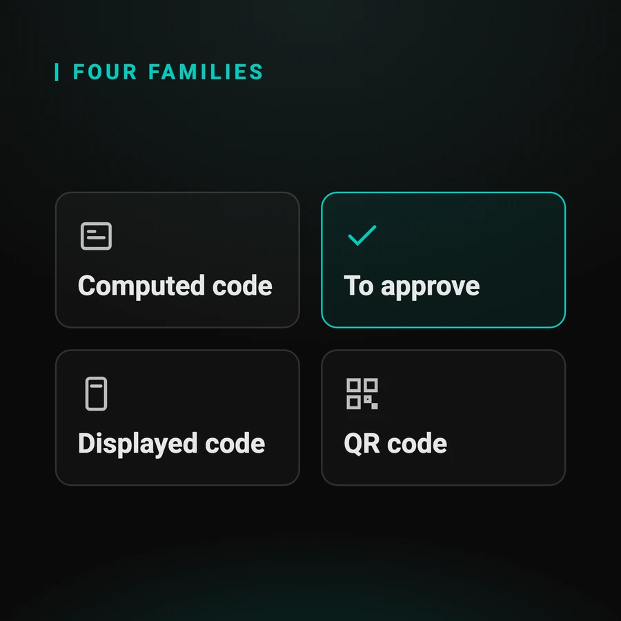

Reference guide
Automating two-factor authentication in your tests
The four families of second factor, what a browser can and cannot reach, and the three approaches to clearing the step with nobody in front of the screen.
Read the guide